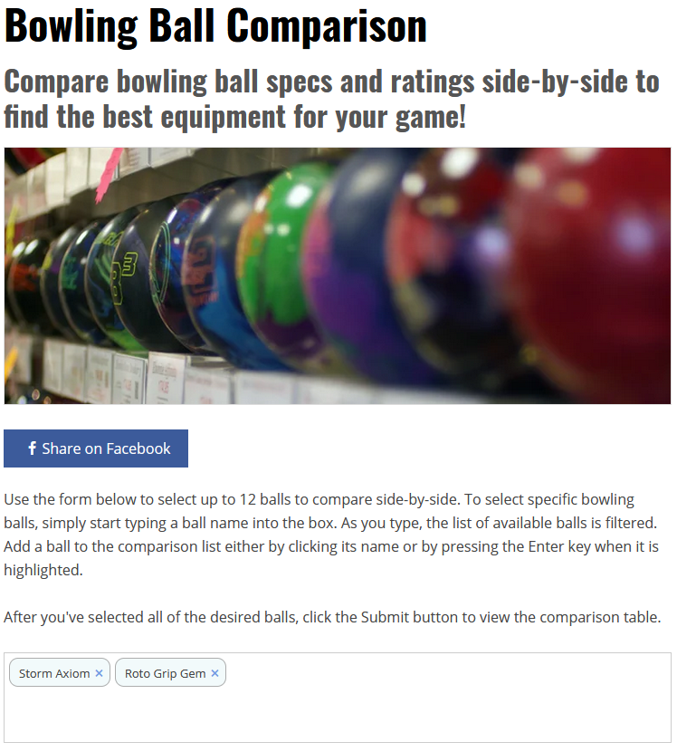
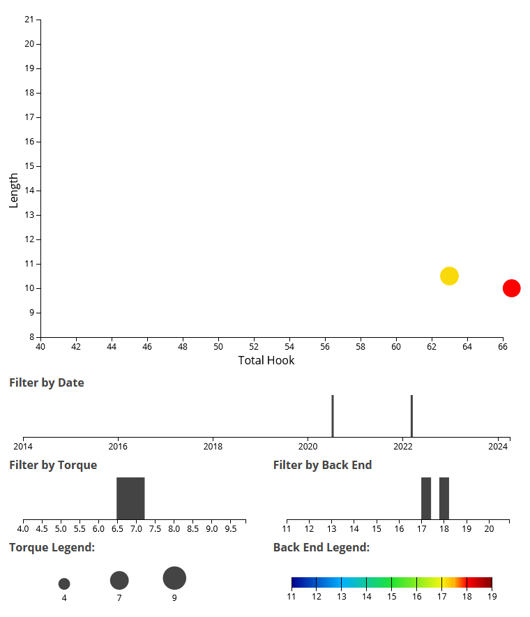
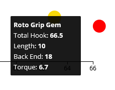

1. The first step to getting the hook and length numbers is going to the bowlingthismonth website comparison page.
2. The second step is to find the bowling balls you want to get the numbers for. For example, the Storm Axiom Solid and Roto-Grip Gem.
3. You are going to take this two bowling balls and input them into the comparison window on the bowlingthismonth website comparison page. Once you have inputted the bowling balls it should look like this.
4. Now that you have your bowling balls in the box you can press the SUBMIT button found right below the box.
5. Once you press submit, you will be taken to a page showing the two balls. Scroll down and you will find a graph that looks like this:
6. This graph is where we will find the length and hook numbers for each ball, but we can not take the numbers directly from this graph. When you hover over the dots, it should look like this:
7. Now that you have the numbers for the total hook and length, you are going to first divide the Length number, which for the gem's case is 10, by the max of the graph, 21.
8. The quotient of 10 / 21 will give you 0.4761904761904762. This number multiplied by 100 will give us the length, so the length of the gem will be 48 rounded.
9. The hook of the ball is determined the same way. Hook # on dot / Max Hook # on X Axis so, 66.5 / 66. This causes a problem however because the max hook is 100 and 66.5 / 66 will give you a number greater than 1 before we multiply by 100. So, in this situation the hook number would just be 100.
After doing those calculations using the numbers from the bowlingthismonth graphs, we would get, for the gem, a hook of 100, and a length of 48.
Go back to home